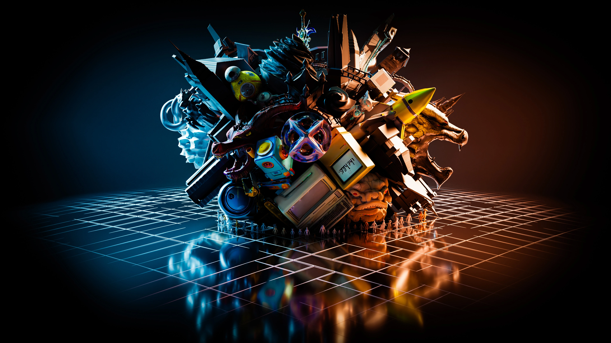
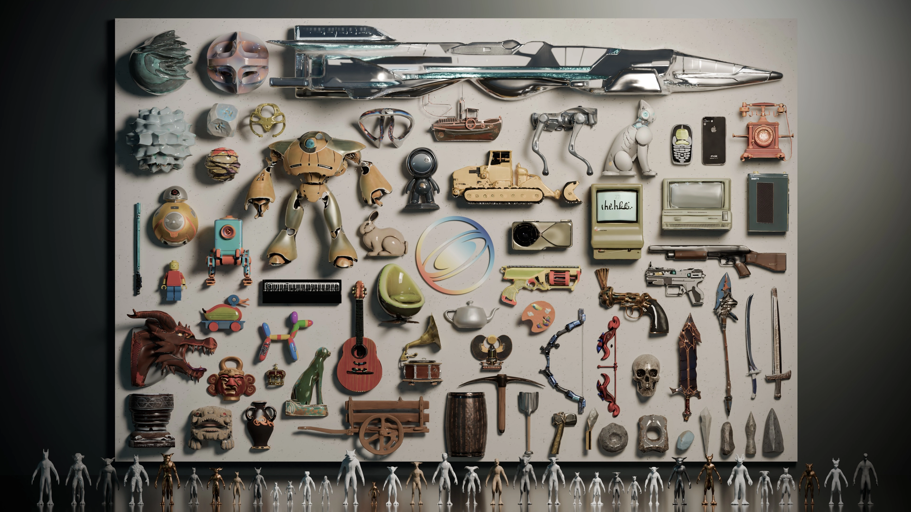

CLAY: A Controllable Large-scale Generative Model for Creating High-quality 3D Assets
Research overview
CLAY generates 3D geometry and physically based materials from text, images, and spatial guidance. A geometry autoencoder and diffusion transformer learn shape priors, while a separate material model produces coordinated texture maps. Controls including multiple views, point clouds, and bounding boxes let users steer the output, from early design ideas to detailed assets that can be rendered under different lighting.
Summary · Read original ↗01 / 03Scroll to explore ↓

